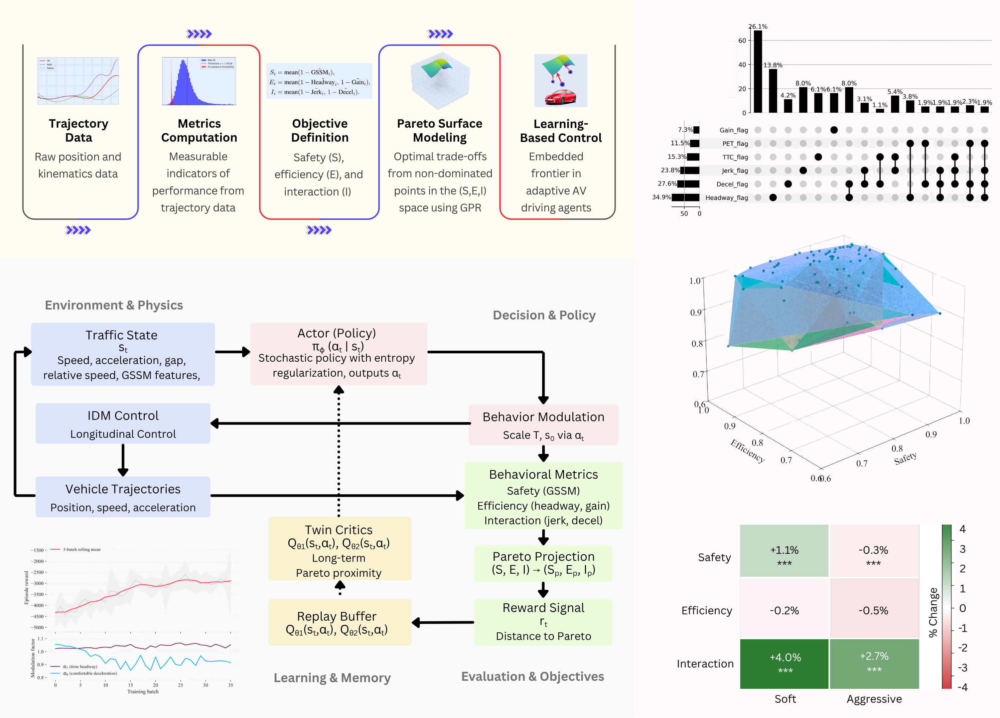
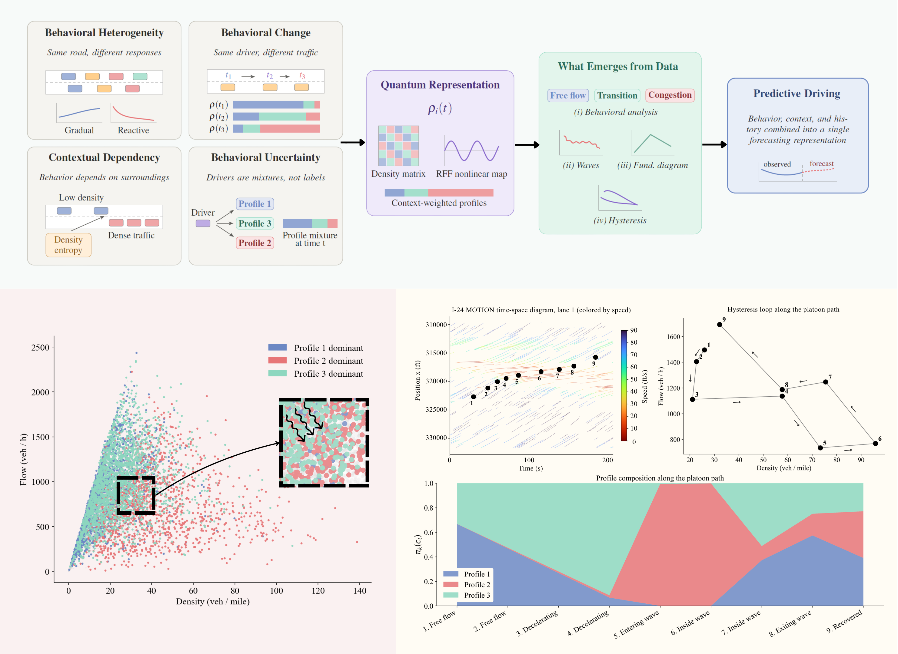

Mohammad Elayan
Current focus, research areas, and a full publication record.
§01 · Current Focus
Autonomous vehicles must balance safety, efficiency, and interaction, goals that are frequently at odds and cannot be resolved by any single hand-crafted reward. This thread defines behavioral consensus as the joint alignment of these three dimensions, derives an empirical Pareto surface directly from naturalistic trajectories, and uses that surface as the target a reinforcement learning agent, trained with Soft Actor-Critic in SUMO, learns to drive toward on a timestep basis, with no access to future data.

Rather than reducing driver heterogeneity to discrete labels such as aggressive or cautious, this thread represents each surrounding driver as an evolving density matrix in a nonlinear feature space, continuous, probabilistic, context-dependent, and history-dependent. The representation recovers interpretable driver profiles without supervision and reproduces macroscopic traffic phenomena, such as the fundamental diagram and hysteresis, that were never built into the model.

§02 · Research Areas
01
Developing AV policies that adapt to competing objectives in simulated networks, using reinforcement learning with Pareto-based rewards from empirical data to test how consensus-aware designs change outcomes.
02
Representing driver heterogeneity as evolving, probabilistic behavioral states rather than discrete driver types, capturing mixed and transitional patterns directly from naturalistic trajectory data.
03
Using high-resolution datasets such as TGSIM to study AV responses at intersections, quantifying safety-critical events, pedestrian hesitation, and consensus violations across performance dimensions.
04
Integrating street-view imagery, traffic-calibrated location-based data, and crash records into spatially granular models of crash count and severity for safety assessment.
05
Building microsimulation environments calibrated to real-world traffic using mobility indicators, supporting scalable, data-driven approaches for multi-modal planning and safety applications.
06
Applying geospatial indexing and optimization frameworks to problems from pharmaceutical access to automated delivery, balancing efficiency, resource use, and equity in mobility systems.
§03 · Publications
7 total
5 total
8 total
2 total
§04 · Connect
melayan2@nebraska.edu